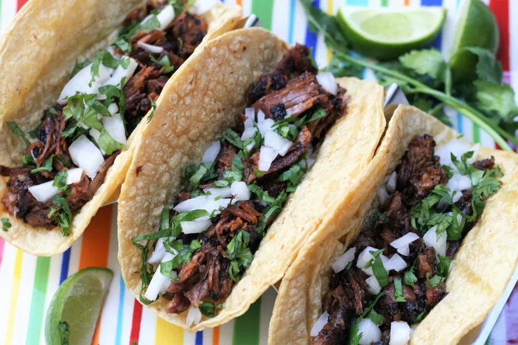

Tacos

Description
Birria, a.k.a. tacos de birria, is a Mexican dish of meat (usually goat or beef) stewed in its braising liquid until it reaches a melt-in-your-mouth texture. Traditionally, it gets its flavor from dried chile peppers. Birria can be served alone as a stew or on corn tortillas.
Ingredients
- Dried Chile Peppers
- Beef
- Seasonings
- Olive Oil
- Tomatoes
- Vinegar
- Tortillas
- Onion and Cilantro
Steps
- Boil the dried peppers for 5 minutes, then remove from heat and let the peppers soak until the water is cool. Drain, reserving some water.
- Season the beef and sear on all sides in oil in a Dutch oven.
- Grill the tomatoes until the skin is blistered and begins to peel.
- Blend the soaked chili peppers with the reserved chile water, tomatoes, vinegar, and seasonings.
- Strain the sauce and pour over the meat. Cover the Dutch oven and cook until the meat begins to fall apart, basting often. Allow the meat to rest, then shred.
- Warm the tortillas on the griddle. Fill each tortilla with meat, onions, and cilantro.
Back to the Home Page